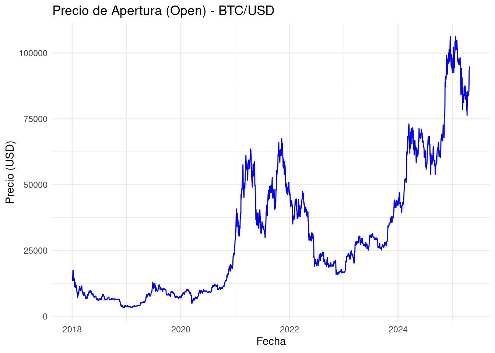
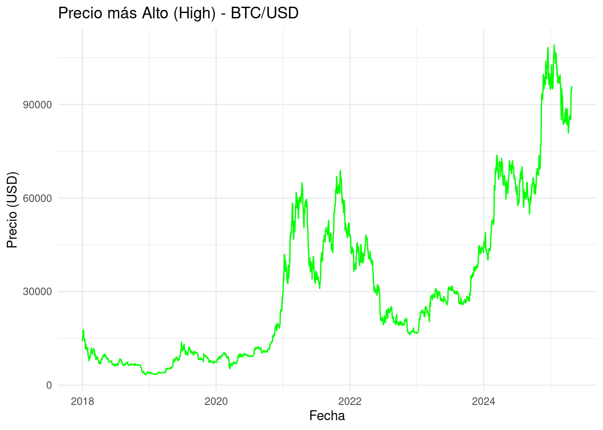
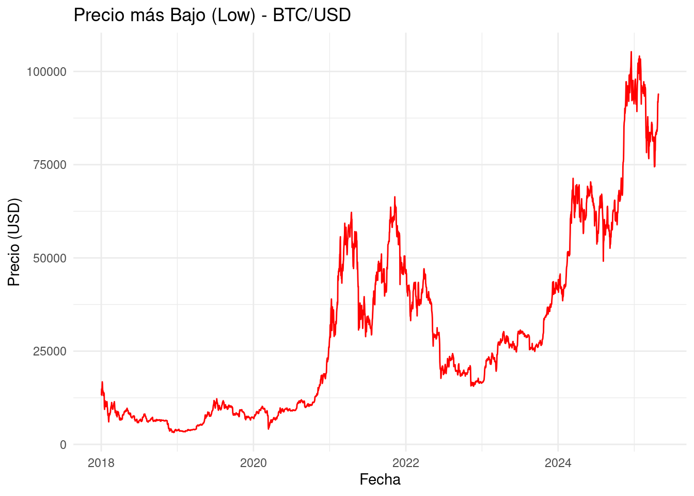
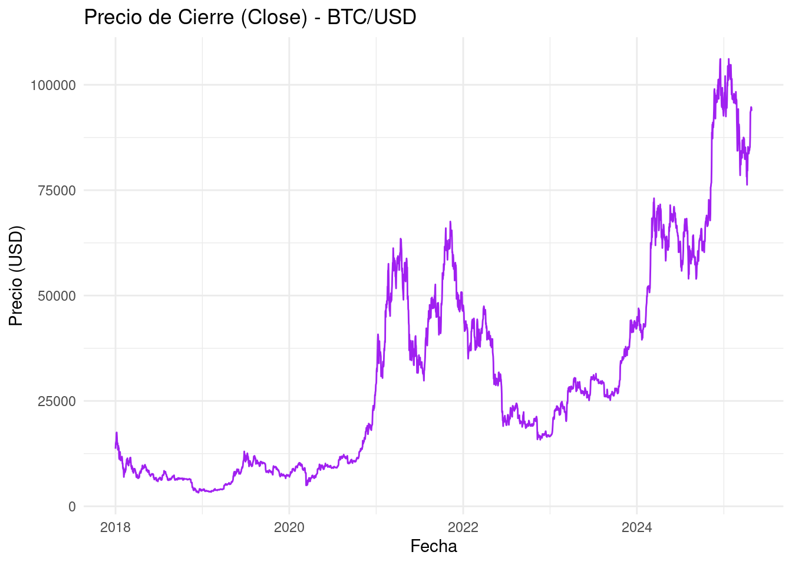

Chapter 3 Literature
Here is a review of existing methods.
## Installing package into '/cloud/lib/x86_64-pc-linux-gnu-library/4.4'
## (as 'lib' is unspecified)## Installing package into '/cloud/lib/x86_64-pc-linux-gnu-library/4.4'
## (as 'lib' is unspecified)## Loading required package: xts## Loading required package: zoo##
## Attaching package: 'zoo'## The following objects are masked from 'package:base':
##
## as.Date, as.Date.numeric## Loading required package: TTR## Registered S3 method overwritten by 'quantmod':
## method from
## as.zoo.data.frame zoo# Descargar datos de Yahoo Finance
getSymbols("BTC-USD",
src = "yahoo",
from = "2018-01-01",
to = Sys.Date(),
periodicity = "daily")## [1] "BTC-USD"# Convertir el objeto descargado a 'zoo'
btc_zoo <- as.zoo(`BTC-USD`)
# Ver las primeras filas
head(btc_zoo)## BTC-USD.Open BTC-USD.High BTC-USD.Low BTC-USD.Close BTC-USD.Volume
## 2018-01-01 14112.2 14112.2 13154.7 13657.2 10291200000
## 2018-01-02 13625.0 15444.6 13163.6 14982.1 16846600192
## 2018-01-03 14978.2 15572.8 14844.5 15201.0 16871900160
## 2018-01-04 15270.7 15739.7 14522.2 15599.2 21783199744
## 2018-01-05 15477.2 17705.2 15202.8 17429.5 23840899072
## 2018-01-06 17462.1 17712.4 16764.6 17527.0 18314600448
## BTC-USD.Adjusted
## 2018-01-01 13657.2
## 2018-01-02 14982.1
## 2018-01-03 15201.0
## 2018-01-04 15599.2
## 2018-01-05 17429.5
## 2018-01-06 17527.0## Installing package into '/cloud/lib/x86_64-pc-linux-gnu-library/4.4'
## (as 'lib' is unspecified)tc_df <- data.frame(date = index(btc_zoo), coredata(btc_zoo))
# Crear gráfico de Open
ggplot(tc_df, aes(x = date, y = BTC.USD.Open)) +
geom_line(color = "blue") +
labs(title = "Precio de Apertura (Open) - BTC/USD",
x = "Fecha",
y = "Precio (USD)") +
theme_minimal()
# Crear gráfico de High
ggplot(tc_df, aes(x = date, y = BTC.USD.High)) +
geom_line(color = "green") +
labs(title = "Precio más Alto (High) - BTC/USD",
x = "Fecha",
y = "Precio (USD)") +
theme_minimal()
# Crear gráfico de Low
ggplot(tc_df, aes(x = date, y = BTC.USD.Low)) +
geom_line(color = "red") +
labs(title = "Precio más Bajo (Low) - BTC/USD",
x = "Fecha",
y = "Precio (USD)") +
theme_minimal()
# Crear gráfico de Close
ggplot(tc_df, aes(x = date, y = BTC.USD.Close)) +
geom_line(color = "purple") +
labs(title = "Precio de Cierre (Close) - BTC/USD",
x = "Fecha",
y = "Precio (USD)") +
theme_minimal()